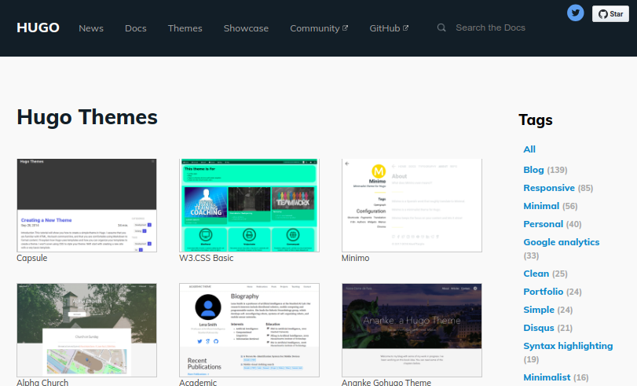

Criando websites com blogdown
Eduardo E. Ribeiro Jr
1º R Day - Encontro nacional de usuários do R
Eduardo E. Ribeiro Jr
1º R Day - Encontro nacional de usuários do R
Por que eu preciso de um site?
O que um site me proporciona:
- Visibilidade;
- Organização;
- Portfólio;
- Projetos;
- Contatos.
Como criar um website
- Wordpress, Wix, Blogsplot:
- Sites dinâmicos, precisam de suporte por parte do servidor (MySql, PHP, etc.)
- Blogdown:
- Sites estatísticos, são apenas um conjunto de arquivos HTML, CSS e JavaScript. Não precisam de suporte do servidor;
- Utiliza a linguagem de marcação Markdown. Simplicidade e portabilidade;
- Pode utilizar documentos dinâmicos via R Markdown (.Rmd).
Blogdown
 + =
+ = 
- Hugo, gerador de sites estáticos:
- Escrito em Go, gera sites de forma rápida e segura;
- Software livre, de código aberto e de fácil instalação;
- Feito para propósitos gerais.
- R Markdown,
- Recusa apresentações.
Instalação
# Instala a versão do CRAN
install.packages("blogdown")
# Instala a versão em desenvolvimento no GitHub
devtools::install_github("rstudio/blogdown")
# Instala o Hugo
blogdown::install_hugo()
# Verifica o versão do Hugo
blogdown::hugo_version()Temas do Hugo

https://themes.gohugo.io/
Fluxo de trabalho (códigos)
# Criando o site (a partir de exampleSite)
new_site(dir = "meu-site", theme = "username/repo")
# Gerando o site
# *(gera os arquivos no diretório específico)
build_site()
# Gerando site
# *(inicia um servidor local para desenvolvimento contínuo)
serve_site()
# Criando novo post
new_post(title = "Meu Post2",
author = "Eduardo Jr",
categories = "pessoal",
tags = "awesome",
ext = ".Rmd")Fluxo de trabalho (RStudio)
- Criando o site (a partir de exampleSite):
- New Project
->New Directory->Website using blogdown;
- New Project
- Gerando o site:
- Panel Build
->Build Website ou Crtl + Shift + B
- Panel Build
- Gerando o site (desenvolvimento contínuo):
- Addin
->Serve Site
- Addin
- Criando novo post
- Addin
->New Post - Addin
->Update Metadata
- Addin
Estrutura do diretório (site)
.
├── config.toml
├── content
│ └── post
│ ├── 2015-07-23-r-rmarkdown.html
│ ├── 2015-07-23-r-rmarkdown.Rmd
│ └── hello-markdown.md
├── docs
├── index.Rmd
├── static
└── themesArquivos componentes do site
Arquivo de configuração:
config.[toml, yaml, yml, json];Temas disponíveis:
themes/;Hospeda o site (arquivos HTML, CSS, JS, XML): [
public/,docs/,myfolder/];- Conteúdo do site:
- Arquivos md, Rmd:
content/ - Arquivos gerais:
static/
- Arquivos md, Rmd:
Arquivo necessário:
index.Rmd(funcionalidade depende do tema).
Estrutura do diretório (tema)
.
├── exampleSite
│ ├── config.toml
│ ├── content
│ ├── layouts
│ └── static
├── layouts
│ ├── 404.html
│ ├── _default
│ │ └── single.html
│ ├── index.html
│ └── partials
│ ├── disqus.html
│ ├── footer.html
│ ├── footer_mathjax.html
│ └── header.html
├── static
│ ├── css
│ │ ├── fonts.css
│ │ └── style.css
│ ├── favicon.png
│ └── js
│ └── math-code.js
└── theme.tomlArquivos componentes do tema
Exemplo de um site padrão:
exampleSite/Organização do site (templates HTML):
layouts/Arquivos de estilo e funcionalidades (CSS, JS, images);
Hospedando seus sites
- Domínio próprio:
- Registre um domínio (R$ ??);
- Configure o domínio personalizado na plataforma onde está desenvolvendo o seu site.
Hospedando seus sites
- GitHub (.github.io):
- Caso seja sua página pessoal, crie um repositório com o nome username.github.io e hospede nesse repositório os arquivos estáticos do seu site;
- Caso seja a página de um projeto, crie um ramo de nome
gh-pagese hospede nesse ramo os arquivos estáticos do seu site; - Fluxo sugerido, utilize serviços do tipo travis.ci para realizar a atualização automática do seu site.
Hospedando seus sites
- Rbind (.rbind.io):
- Abra uma issue;
- Junte-se a organização www.github.com/rbind;
- Transfira (ou crie) o repositório do seu site nessa organização;
Hospedando seus sites
- Netlify (.netlify.com):
- Crie uma conta em https://www.netlify.com/;
- Novo site a partir de um diretório;
- Novo site com Git.
Quem está usando blogdown
- Página do curso Data Science & Big Data,
http://dsbd.leg.ufpr.br/
- Página da Curso-R,
http://curso-r.com/
- Entre muitos outros.
Referências
- Livro: blogdown: Creating Websites with R Markdown, por Yihui Xie, Amber Thomas, Alison Presmanes Hill, R Series.
- Versão online: https://bookdown.org/yihui/blogdown/
- Talk: Creating Websites with R Markdown and blogdown, por Yihuui Xie na rstudio::conf 2018.
- Slides: https://bit.ly/2018-blogdown
- Repositórios: